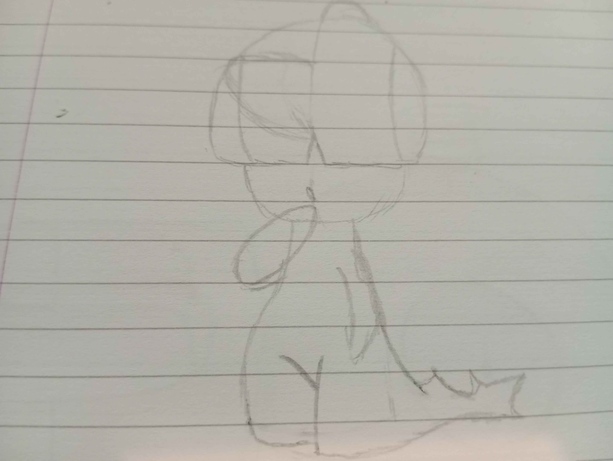
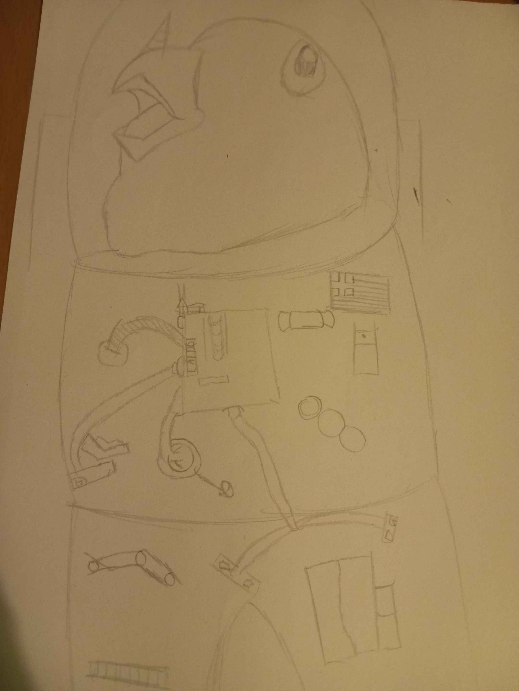
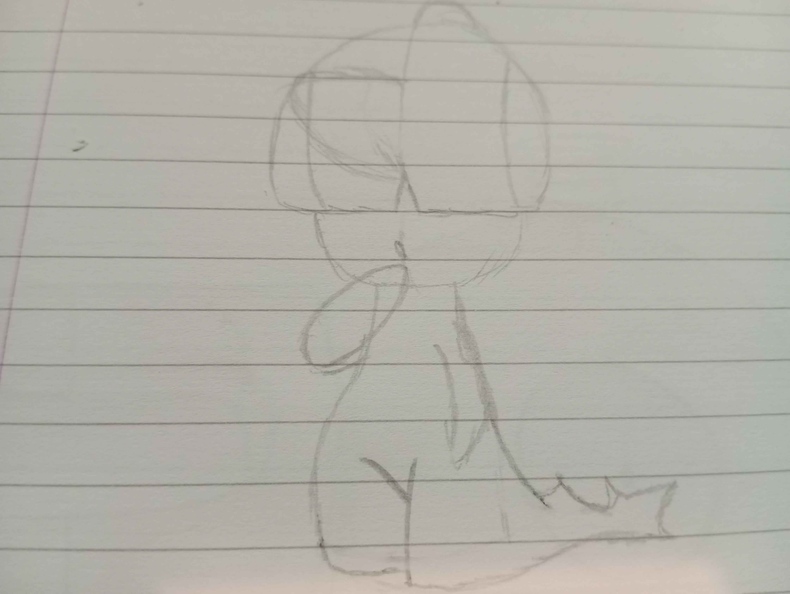
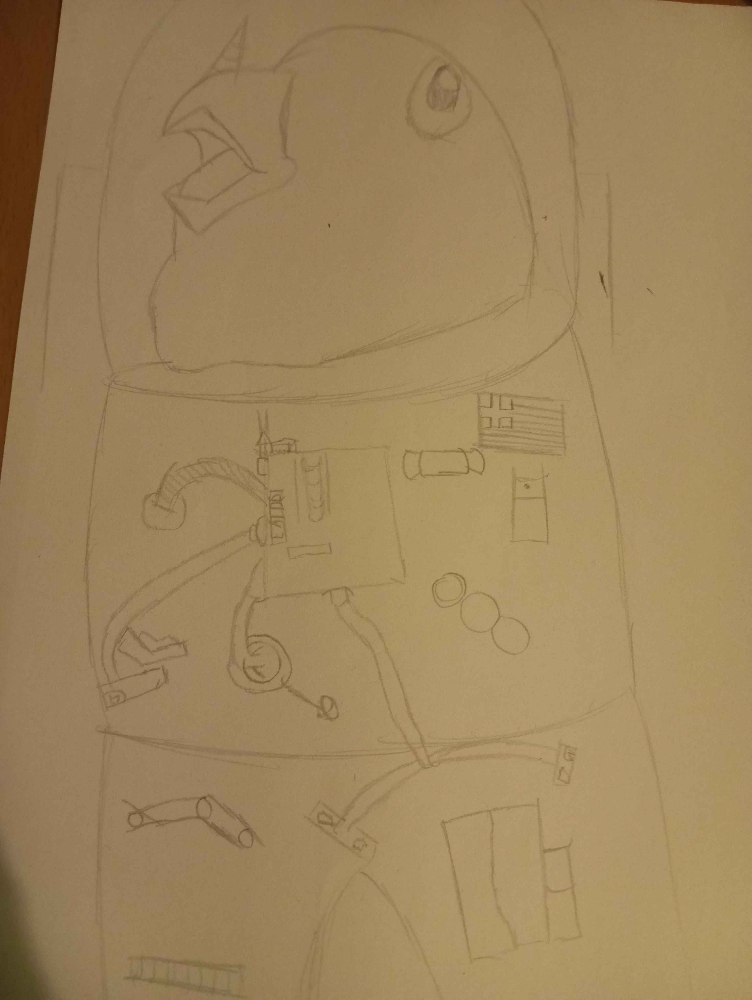

IcePqnos
Hello, this is a section with detail information about the hobbies a pursue(Drawing,Programming, chess and others), thank you for coming here and most important have fun!I will update this section the sooner I can!
Hello, this is a section with detail information about the hobbies a pursue(Drawing,Programming, chess and others), thank you for coming here and most important have fun!I will update this section the sooner I can!
So I started liking art a while ago; as of right now I can only do simple Pokémon such as Weedle, Electrode, and Magnemite. Here I can showcase what I am working on and post my work! Here is a little bit of a showcase:
Learning:
These are examples of my work:
 



Painting was something that I always wanted to do, but didn't have the budget for it.I started painting recently,
and I have enjoyed it a lot! I hope I can improve fast and show everyone my artwork.Painting has been one of the most fun things to work on.Here is what I am learning:
a bit of showcase of my work:
Learning:
These are examples of my work:

Coding was something I started 2 years ago, It was
a normal day at highschool and we had IT class, He taught us how to make websites with HTML and
I really liked the idea of it so I spend hours on learning HTML and CSS and this is the result of it
I have also learned a bit of python and C(and checked a bit of everythibg), I am currently learning coding with my own pace since I don't have a lot of free
time, my favorite thing is creating webiistes here I can showcase what I have done and what I am currently learning:
Learning:
These are examples of my work:
Chess was something that I learned when I was like 10, although I didn't spent learning so much
my elo when I started was around 300, I joined a small school tournament and I wonn my first match and then lost my second it was fun, after around 3 years
I thought chess is cool I should learn a bit more after like a couple of weeks I reached like 500 elo and then gave up on it, I played with friends once in a whike
So like in middle of the summer I though chess was cool and now I am more mature I should play more so in a span of 1 month I went to 800 elo and learned that my father's
peak elo was 1600, so I a 1600 FIDE rated player teach me a little bit more about it and now I am still learning!
Learning:
These are examples of my Acheivements:
This is something relative new since I have been on the internet, i have met some really good people and languages are really
interesting so I said why not, I am thinking of learning 3 languages by myself: Chinese(Mandarin & traditional), Japanese & and hindi.I already know my mother-tangue around
french, here I can showcase what I have learned:
Learning:
These are examples of my work:

Finai note: Once I have more hobbies I will keep you updated!